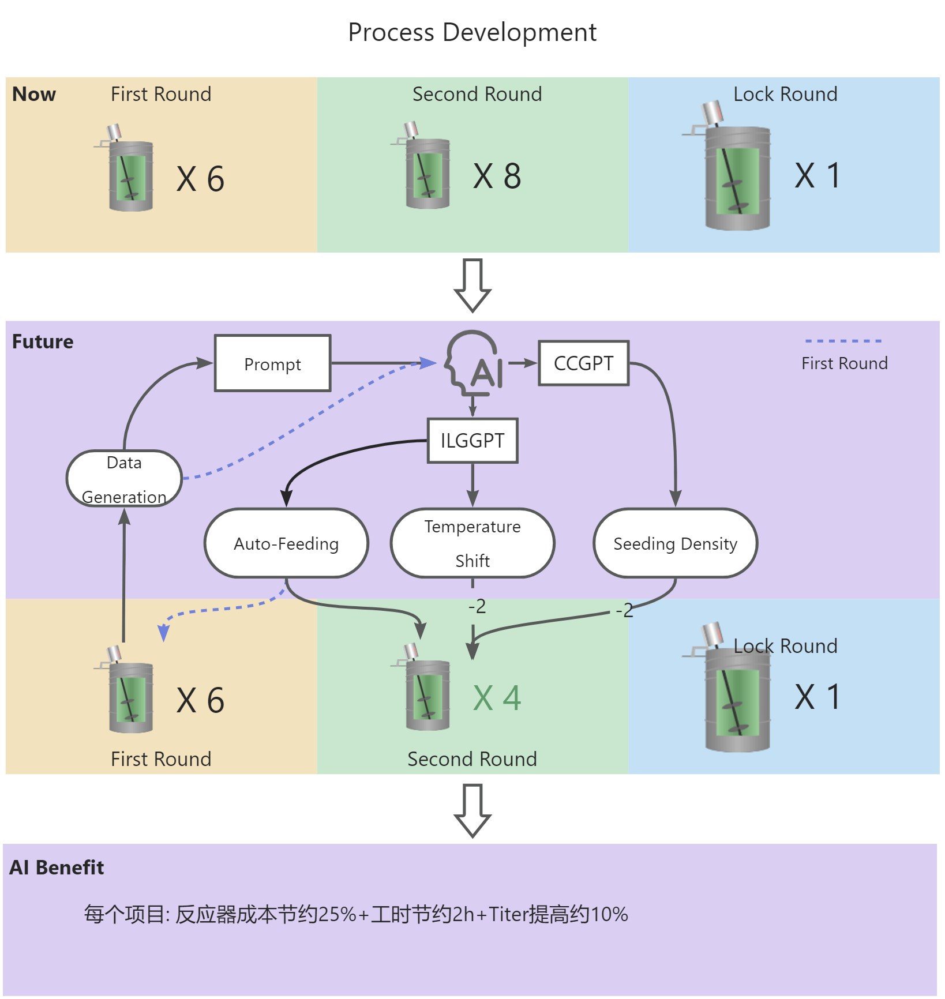
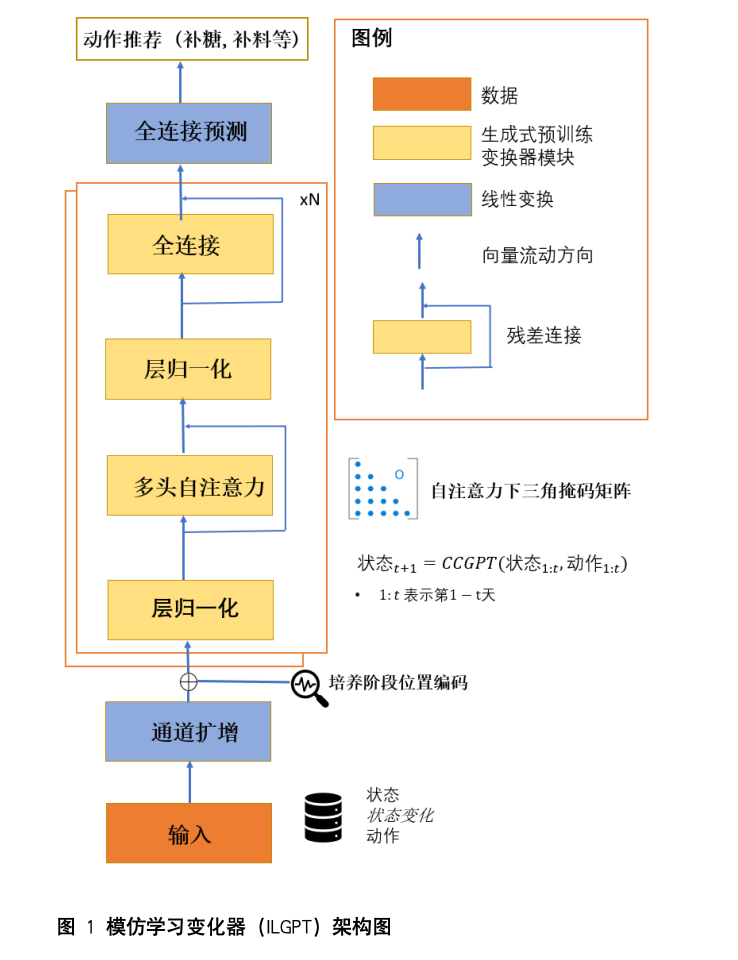

Case Study · AI 大模型
上游工艺 AI 大模型产品化
深度参与上游工艺 AI 大模型开发，把数据、模型、湿实验验证和上线推广串成完整产品闭环。
产品闭环
- 收集并清洗历史工艺数据，评估数据可信度。
- 与 AI 团队协作完成参数优化、模型测试与迭代。
- 通过湿实验验证模型建议的可行性。
- 组织上线测试、用户培训和部门推广。
参考截图


Case Study · AI 大模型
深度参与上游工艺 AI 大模型开发，把数据、模型、湿实验验证和上线推广串成完整产品闭环。

